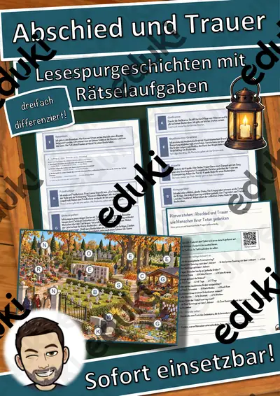
Lesespur: Abschied und Trauer: wie Menschen ihrer Toten gedenken – Lesespurgeschichte mit Rätseln (Klasse 9)

Lesespur: Advent: warten auf Weihnachten – Lesespurgeschichte mit Rätseln (Klasse 2)
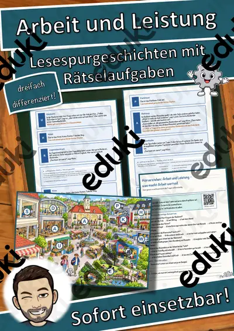
Lesespur: Arbeit und Leistung: was macht Arbeit wertvoll? – Lesespurgeschichte mit Rätseln (Klasse 9)

Lesespur: Aschermittwoch und Fastenzeit: vom Fasching bis Ostern – Lesespurgeschichte mit Rätseln (Klasse 6)
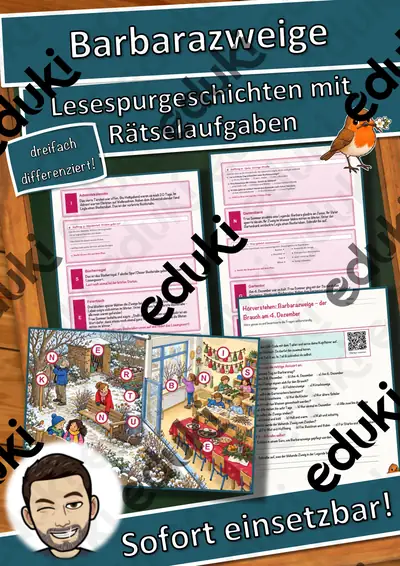
Lesespur: Barbarazweige: der Brauch am 4. Dezember – Lesespurgeschichte mit Rätseln (Klasse 3)

Lesespur: Bewusst konsumieren: die Reise eines T-Shirts – Lesespurgeschichte mit Rätseln (Klasse 8)

Lesespur: Das Frühlingsfest: Neujahr in China – Lesespurgeschichte mit Rätseln (Klasse 5)

Lesespur: Das Gewissen und die innere Stimme – Lesespurgeschichte mit Rätseln (Klasse 10)

Lesespur: Der Tag der Muttersprache: viele Sprachen in meiner Klasse – Lesespurgeschichte mit Rätseln (Klasse 5)

Lesespur: Die Anfänge der Philosophie: eine Zeitreise ins antike Athen – Lesespurgeschichte mit Rätseln (Klasse 10)
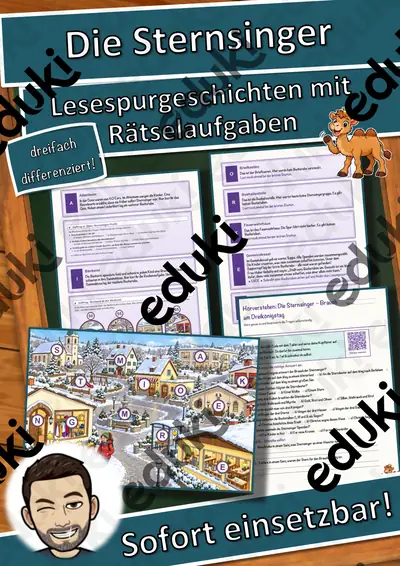
Lesespur: Die Sternsinger: Brauch am Dreikönigstag – Lesespurgeschichte mit Rätseln (Klasse 3)

Lesespur: Die Weihnachtsgeschichte: Herberge, Hirten, Sterndeuter – Lesespurgeschichte mit Rätseln (Klasse 2)

Lesespur: Die lange Kulturnacht: was macht Kultur wertvoll? – Lesespurgeschichte mit Rätseln (Klasse 3)

Lesespur: Echte Freunde: Freundschaft, Clique und Gruppendruck – Lesespurgeschichte mit Rätseln (Klasse 6)

Lesespur: Ehrlich sein – Lesespurgeschichte mit Rätseln (Klasse 3)
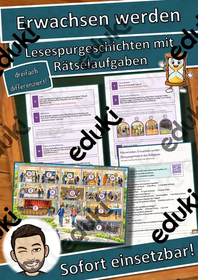
Lesespur: Erwachsen werden: Übergangsrituale in den Religionen – Lesespurgeschichte mit Rätseln (Klasse 7)

Lesespur: Fair wirtschaften: Wirtschaftsethik zwischen Gewinn und Verantwortung – Lesespurgeschichte mit Rätseln (Klasse 10)

Lesespur: Freiheit und Verantwortung – Lesespurgeschichte mit Rätseln (Klasse 10)

Lesespur: Freizeit sinnvoll gestalten: was macht meine freie Zeit wertvoll? – Lesespurgeschichte mit Rätseln (Klasse 6)

Lesespur: Gefühle verstehen und zeigen – Lesespurgeschichte mit Rätseln (Klasse 3)
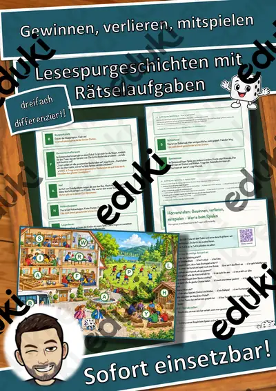
Lesespur: Gewinnen, verlieren, mitspielen: Werte beim Spielen – Lesespurgeschichte mit Rätseln (Klasse 5)

Lesespur: Gute Vorsätze: was ich ändern will – Lesespurgeschichte mit Rätseln (Klasse 8)

Lesespur: Ich bin ich: Selbstwert, Stärken und Gefühle in der Pubertät – Lesespurgeschichte mit Rätseln (Klasse 7)

Lesespur: Jeder sieht die Welt anders: Wahrnehmung und Blickwinkel – Lesespurgeschichte mit Rätseln (Klasse 5)
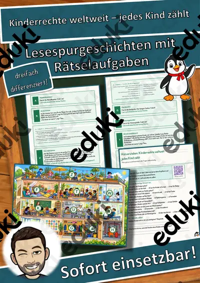
Lesespur: Kinderrechte weltweit: jedes Kind zählt – Lesespurgeschichte mit Rätseln (Klasse 3)

Lesespur: Liebe, Freundschaft, Partnerschaft: was Beziehungen stark macht – Lesespurgeschichte mit Rätseln (Klasse 9)
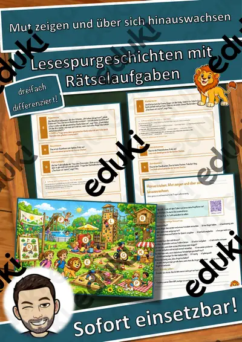
Lesespur: Mut zeigen und über sich hinauswachsen – Lesespurgeschichte mit Rätseln (Klasse 4)

Lesespur: Nachhaltig schenken: Zeit, Selbstgemachtes und Verpackung ohne Müll – Lesespurgeschichte mit Rätseln (Klasse 6)
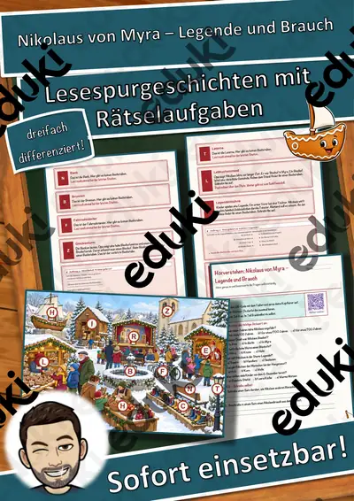
Lesespur: Nikolaus von Myra: Legende und Brauch – Lesespurgeschichte mit Rätseln (Klasse 2)

Lesespur: Ostern: Bräuche rund ums Osterfest – Lesespurgeschichte mit Rätseln (Klasse 2)

Lesespur: Rituale im Alltag: was uns jeden Tag begleitet – Lesespurgeschichte mit Rätseln (Klasse 1)

Lesespur: Rollenbilder im Wandel: Gleichberechtigung von Frau und Mann – Lesespurgeschichte mit Rätseln (Klasse 10)

Lesespur: Sankt Martin: vom Teilen und Helfen – Lesespurgeschichte mit Rätseln (Klasse 2)

Lesespur: Santa Lucia: das Lichterfest im Dezember – Lesespurgeschichte mit Rätseln (Klasse 3)

Lesespur: Sich für andere einsetzen – Lesespurgeschichte mit Rätseln (Klasse 8)

Lesespur: Sich für den Frieden einsetzen – Lesespurgeschichte mit Rätseln (Klasse 9)

Lesespur: Silvester und Neujahr: Bräuche zum Jahreswechsel – Lesespurgeschichte mit Rätseln (Klasse 2)
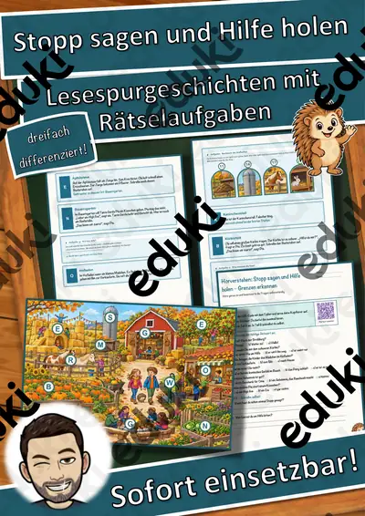
Lesespur: Stopp sagen und Hilfe holen: Grenzen erkennen – Lesespurgeschichte mit Rätseln (Klasse 1)

Lesespur: Streit schlichten: wir finden eine Lösung – Lesespurgeschichte mit Rätseln (Klasse 3)

Lesespur: Streit und Konflikte fair lösen – Lesespurgeschichte mit Rätseln (Klasse 7)

Lesespur: Verantwortung für Tiere und die Natur – Lesespurgeschichte mit Rätseln (Klasse 7)

Lesespur: Warum Regeln wichtig sind – Lesespurgeschichte mit Rätseln (Klasse 3)

Lesespur: Was darf die Medizin?: Grundfragen der Medizinethik – Lesespurgeschichte mit Rätseln (Klasse 10)

Lesespur: Was ist Glück? – Lesespurgeschichte mit Rätseln (Klasse 6)

Lesespur: Was macht einen guten Freund? – Lesespurgeschichte mit Rätseln (Klasse 3)
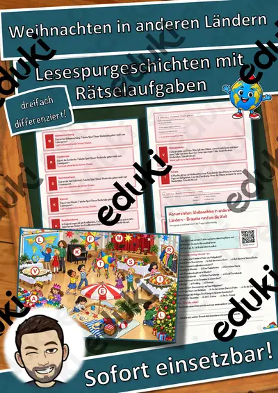
Lesespur: Weihnachten in anderen Ländern: Bräuche rund um die Welt – Lesespurgeschichte mit Rätseln (Klasse 2)

Lesespur: Werden und Vergehen: ein Jahr im Garten von Oma Rosi – Lesespurgeschichte mit Rätseln (Klasse 3)

Lesespur: Wie Menschen beten: ein Rundgang im Park der Religionen – Lesespurgeschichte mit Rätseln (Klasse 6)

Lesespur: Wofür lohnt es sich zu leben?: Sinnsuche im Jugendalter – Lesespurgeschichte mit Rätseln (Klasse 8)

Lesespur: Zusammenleben in der Familie – Lesespurgeschichte mit Rätseln (Klasse 5)
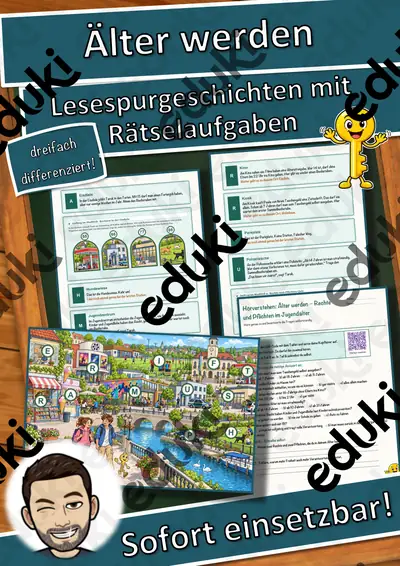
Lesespur: Älter werden: Rechte und Pflichten im Jugendalter – Lesespurgeschichte mit Rätseln (Klasse 8)

Materialpaket Advent und Weihnachten für die 3. Klasse: 8 Lesespurgeschichten mit Rätselaufgaben (Barbarazweige, Lebkuchen, Santa Lucia, Sternsinger & mehr)

Materialpaket Feste im Winter für die 2. Klasse: 6 Lesespurgeschichten mit Rätselaufgaben (Sankt Martin, Nikolaus, Advent, Weihnachten & Silvester)
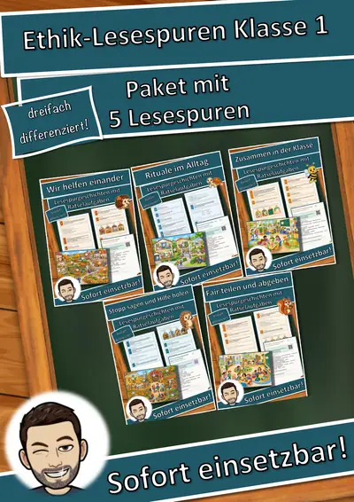
Materialpaket Lesespurgeschichten Ethik Klasse 1: 5 Lesespuren mit Rätselaufgaben, dreifach differenziert

Materialpaket Lesespurgeschichten Ethik Klasse 3: 9 Lesespuren mit Rätselaufgaben, dreifach differenziert

Materialpaket Lesespurgeschichten Ethik Klasse 4: 4 Lesespuren mit Rätselaufgaben, dreifach differenziert

Materialpaket Lesespurgeschichten Ethik Klasse 5: 7 Lesespuren mit Rätselaufgaben, dreifach differenziert

Materialpaket Lesespurgeschichten Ethik Klasse 6: 8 Lesespuren mit Rätselaufgaben, dreifach differenziert

Materialpaket Lesespurgeschichten Ethik Klasse 7: 7 Lesespuren mit Rätselaufgaben, dreifach differenziert